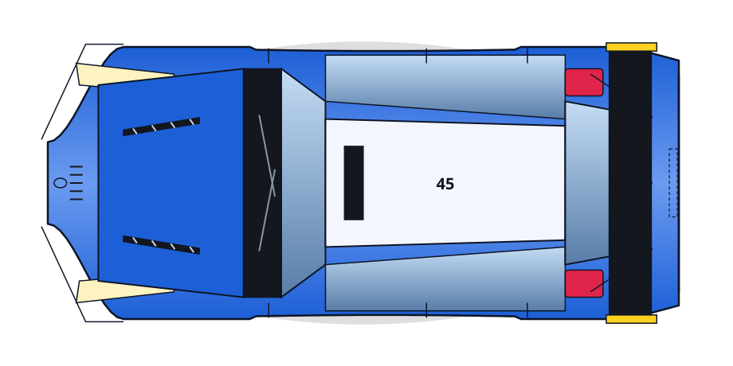
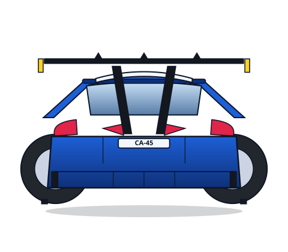

| Tell | Where |
|---|---|
| Hatchback stance: short bonnet, roof peak 0.60-0.66L, steep tail, no boot deck | side.svg roof peak at 0.63L; top.svg roof island 0.44-0.82 |
| Glass ring: 3-pane side glass, thick C-pillar, wide raked hatch glass | side.svg glass band 0.40-0.83 + C-pillar block; rear.svg hatch glass |
| Full-width rear wing on 2 pylons over hatch glass, endplates + 3 fins | all three; side x=0.89-0.96, top span 0.97W, rear pylons at +/-0.10W |
| Bonnet vents: 2 slanted 4-slat louvres, front half of bonnet | top.svg x=0.12-0.24 at 20 deg |
| Splitter under tall wide nose, lip wraps both front corners | side.svg z=0.05-0.10H; top.svg double lip line |
| Flared arches (r=0.085L) on straight sides; sill + skirt lips | side.svg arches at 0.235/0.84L; top.svg 0.50W flares, 0.49W waist |
Flat PNG game sprites: side.png, top.png, rear.png (pure-stdlib encoder).